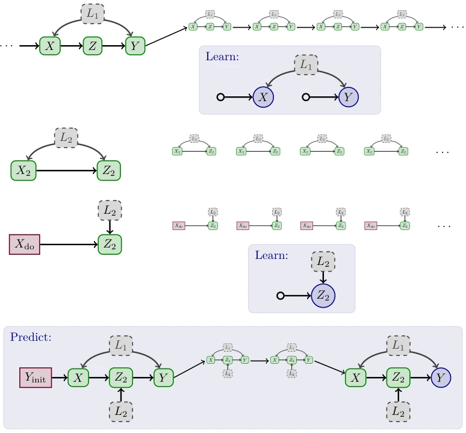
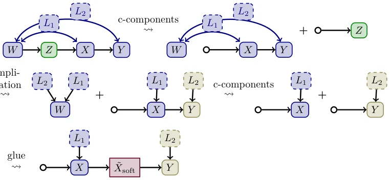
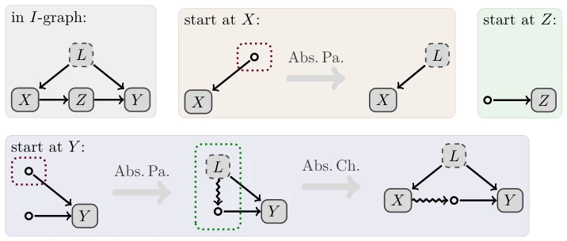
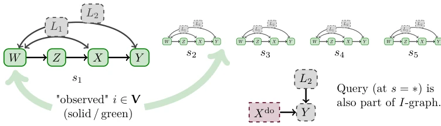
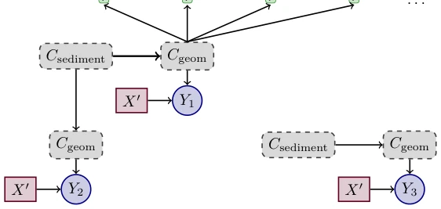

这篇论文试图给因果推断穿上一件“纯数学”的紧身衣，把 IID 假设和随机变量统统脱掉，只留下对称性和机制不变性。作者声称要统一所有因果框架，从时间序列到多环境迁移，听起来很宏大。但读下来发现，这更像是一场“为了抽象而抽象”的数学体操：把原本直观的因果图论问题，用群作用、测度论核和结构图重新包装了一遍。虽然理论推导严谨，甚至能复现 Pearl 的 do-calculus，但把“随机性”从模型定义中移除，反而让统计推断的直观性大打折扣。对于搞具身智能的工程师来说，这套理论虽然优雅，但离“落地”还隔着一条银河系——它解决了“如何定义”的问题，却没给“怎么算”提供现成的算法，更多是提出了几个有待验证的猜想（Conjecture A/B/C/D）。这就像给汽车造了一个完美的数学引擎模型，但还没造出能开上路的零件。
This paper attempts to put a "pure mathematical" straitjacket on causal inference, stripping away IID assumptions and random variables entirely, leaving only symmetry and mechanism invariance. The authors claim to unify all causal frameworks, from time series to multi-environment transfer, sounding grand. But upon reading, it feels more like "math gymnastics for the sake of abstraction": repackaging originally intuitive causal graph theory problems using group actions, measure theory kernels, and structural graphs. Although the theoretical derivation is rigorous, even reproducing Pearl's do-calculus, removing "randomness" from the model definition instead significantly diminishes the intuition of statistical inference. For engineers working on embodied intelligence, although this theory is elegant, it is separated from "deployment" by a galaxy—it solves the "how to define" problem, but doesn't provide ready-made algorithms for "how to calculate", more proposing several conjectures awaiting verification (Conjecture A/B/C/D). This is like building a perfect mathematical engine model for a car, but hasn't yet manufactured parts that can drive on the road.
Existing causal inference frameworks (such as SCM and potential outcomes models) appear inadequate when handling complex real-world problems. They heavily rely on IID assumptions; once data comes from different environments, time series, or has missing values, existing tools (such as do-calculus [30]) often fail. Although existing work attempts extensions, such as introducing selection variables to handle multi-context data [6; 33] or JCI [27], these methods are often "patches" on the original framework, leading to a lack of unified language between different scenarios (such as time series, soft interventions, transfer learning), remaining isolated [15; 19; 27]. The authors point out that this "patching" approach not only increases modeling complexity but also makes cross-scenario causal inference difficult to automate. Furthermore, existing methods struggle to handle complex queries beyond do-interventions (such as mediation effects, predictions at specific time steps), and descriptions of missing data and robustness are not natural enough. This paper aims to establish a unified abstract language based on symmetry and mechanism invariance by removing IID assumptions and random variables, to solve the aforementioned fragmentation problems and achieve general identification from observed data to complex causal queries.

Figure 1: Consider three given data-sets (green solid – observed, gray dashed – latent): A three- periodic univariate time-series (top), repeated IID observations (middle), and repeated experiment (bottom) evaluating for example an upgraded (modular) replacement part in a technical system. Labels (capital letters) are by mechanism, not variables. A plausible question is, what happens if we replace the mechanism Z by Z2 (in the time-series setup), and, starting from some known initial state, have the modified system run for a number, say four, periods to the final value (blue circle). The intuitive solution to this problem is rather clear: there are things that can be learned from the different data-sets, and this knowledge can be pieced together to answer the query. For specific (and simpl
The paper proposes a new causal inference framework based on "Structured Kernels" and "Symmetry Group Actions". The overall process is divided into three steps: First, define the model using pure measure-theoretic language, represent causal mechanisms as probability kernels, and explicitly bind symmetry (Symmetry) and region of applicability (Region of Applicability), thereby getting rid of dependence on random variables and IID assumptions; Second, construct a "Structural Graph", encoding the sparsity of mechanisms and causal dependency relationships in the graph, using graph operations (such as simplification, gluing, c-components decomposition) to derive algebraic relations between kernels; Finally, map the abstract model to actual observed data through "Local Graph Embeddings", using symmetry to extract invariant information from non-IID data. Core innovations lie in: 1. Remove randomness: The model is defined only by kernels and group actions, randomness is only manifested through noise variables in the Observable World, making the theory purer; 2. Unified symmetry: Treat do-interventions as symmetry transformations of mechanisms, unifying the mathematical descriptions of observation, intervention, and counterfactuals; 3. Algebraization of graph operations: Transform complex causal identification problems into algebraic operations on graphs (such as c-components calculation in Lemma 3.7, Gluing operation in Lemma 3.8), providing a theoretical path for automated identification.

Figure 3: Examples for graphical operations. All shown structured kernels can be computed from Pearl’s "napkin"-graph (top-left) and the (know) soft-intervention ˜ Xsoft (a single inner node plus a single outer node for its argument). Inner nodes are colored by structural c-component, hidden nodes Li have dashed border.

Figure 5: Systematic construction of minimal backdoor-free families. While there are: hidden external nodes (red-dotted boxes) absorb parents; backdoor-paths (green-dotted boxes) absorb children. Note that µ(G, L) extracted by Thm. 1 will in the end drop the remaining ancestral edge (it depends only on G and L, not on A), and can be further decomposed (cf. Fig. 3). A single gluing-operation then yields the well-known frontdoor formula [30].

Figure 6: Illustration of I-graph for do-intervention and IID-data (unified model). Nodes correspond to variables of the observable world, labels (capital letters) indicate mechanisms (Def. 2.5).
This paper is primarily a theoretical derivation paper, not containing traditional numerical experiments or benchmarks. The authors verified the effectiveness of this framework in specific scenarios through theoretical derivation: 1. Reproducibility verification: Proved that under IID data assumptions, the framework can strictly reproduce standard results of SCM and potential outcomes models (such as conclusions of do-calculus); 2. Transfer and multi-context: Demonstrated how the framework naturally handles multi-environment data transfer (Transportability) and time series problems, without additionally introducing selection variables; 3. Structure discovery: Demonstrated the potential for handling missing data and counterfactual queries through graph operations (such as the Revealing operation in Corollary 3.9). Although lacking performance comparisons on specific datasets, the authors demonstrated the logical completeness and unification of this framework through formal proofs (such as the derivation of Theorem 1) and multiple examples (such as time series, multi-experiment scenarios). The main finding is that after removing IID and randomness, the underlying logic of causal identification remains clear, and it can handle non-standard data distributions more naturally.

Figure 7: Different multi-level queries for the same system, see example D.13. Green (solid outline, rounded corner rectangles) are observations a single site (other observed sites are not shown).